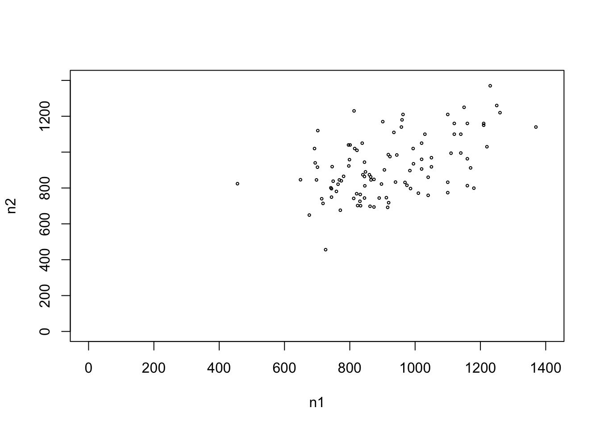

This chapter could have been titled, say, “Optimization, Part I,” since many applications of linear algebra involve minimization or maximization of some kind, and this chapter will involve calculus derivatives. But the statistical applications of linear algebra are equally important.
3.1 Linear Regression through the Origin
Let’s consider the Nile dataset built-in to R. It is a time series, one measurement per year.
head(Nile)
[1] 1120 1160 963 1210 1160 1160
# predict current year from previous year?n1 <- Nile[-(length(Nile))]head(n1)
[1] 1120 1160 963 1210 1160 1160
n2 <- Nile[-1]head(n2)
[1] 1160 963 1210 1160 1160 813
plot(n1,n2,cex=0.4,xlim=c(0,1400),yli=c(0,1400))

We would like to fit a straight line through that data point cloud. We might have two motivations for doing this:
The line might serve as nice summary of the data.
More formally, let \(C\) and \(V\) denote the current and previous year’s measurements..Then the model
\[E(C | V) = \beta V\]
may be useful. Here the slope \(\beta\) is an unknown value to be estimated from the data.
Readers with some background in linear regression models should note that this assumption of a linear trend through the origin is the only assumption we are making here. Nothing on normal distributions etc.
Model validity
The great statistician George Box once said, “All models are wrong but some are useful.” All data scientists should keep this at the forefronts of their minds.
3.1.1 Least squares approach
Let \(b\) denote our estimate. How should we obtain it? We wish to estimate \(\beta\) from our data, which we regard as a sample from the data generating process. Denote our data by \((C_i,V_i), i = 1,...,100\).
This too is something all data scientists should keep at the forefronts of their minds. We are always working with sample data, subject to intersample variations. The quantity \(b\) is a random variable.
Pretend for a moment that we don’t know, say, \(C_{28}\). Using our estimated \(\beta\), our predicted value would be \(b V_{28}\). Our squared prediction error would then be \((C_{28} - b W_{28})^2\).
Well, we actually do know \(C_{28}\) (and the others in our data), so we can answer the question:
In our search for a good value of \(b\), we can ask how well we would predict our known data, using that candidate value of \(b\) in our data. Our total squared prediction error would be
\[
\sum_{i=1}^{100} [C_{i} - b V_{i} )^2
\]
A natural choice for \(b\) would be the value that minimizes this quantity.
Why not look at the absolute value instead of the square? The latter makes the math flow well, as will be seen shortly.
3.1.2 Calculation
As noted, our choice for \(b\) will be the minimizer of
\[
\sum_{i=1}^{100} (C_{i} - b V_{i})^2
\]
This is a straightforward calculus problem. Setting
\[
0 = \frac{d}{db} \sum_{i=1}^{100} (C_{i} - b V_{i} )^2 =
-2 \sum_{i=1}^{100} (C_{i} - b V_{i}) V_i
\]
and solving \(b\), we find that
\[
b = \frac{\sum_{i=1}^n C_i V_i}{\sum_{i=1}^nV_i^2}
\]
This says, “Fit the model \(E(C | V) = \beta V\)$ to the data, with the line constrained to pass through the origin.” The constraint is specified by the -1 term.
We see that the estimate regression line is
\[E(C | V) = 0.98 V\]
3.2 Full linear regression model
Say we do not want to constrain the model to pass the line through the origin. Our model is then
\[E(C | V) = \beta_0 + \beta_1 V\]
where we now have two unknown parameters to be estimated.
This means setting two derivatives to 0 and solving. Since the derivatives involve two different quantities to be optimized, \(b_0\) and \(b_1\), the derivatives are termed partial, and the \(\partial\) symbol is used instead of ‘d’.
We could then solve for the \(b_i\), but let’s go straight to the general case.
3.3 Least-squares estimation, general number of predictors
3.3.1 Nile example
As we have seen, systems of linear equations are natural applications of linear algebra. Equations Equation 3.1 and Equation 3.2 can be written in matrix terms as
Our predicted error vector is very simply expressed:
\[
S - Ab
\]
And since for any column vector \(u\), the sum of its squared elements is
\[
u'u
\]
our sum of squared prediction errors is
\[
(S - Ab)'(S - Ab)
\]
Now how we will minimize that matrix expression with respect to the vector \(b\). That is the subject of the next section.
3.3.2 Matrix derivatives.
The (column) vector of partial derivatives of a scalar quantity is called the gradient of that quantity. For instance, with
\[
u = 2x + 3y^2 + xy
\]
we have that its gradient is
\[
\frac{du}{dx dy} =
\left (
\begin{array}{rr}
2 + y \\
6y + x \\
\end{array}
\right )
\]
With care, we can compute gradients entirely at the matrix level, using easily derivable properties, without ever resorting to returning to the scalar expressions. Let’s apply them to the case at hand in the last section,
\[
(S - Ab)'(S - Ab)
\tag{3.3}\]
3.3.3 Differentiation purely in matrix terms
It can be shown that for a column vector \(a\),
\[
\frac{d}{da} a'a = 2a
\]
Equation Equation 3.3 is indeed of the form \(a'a\), but the problem here is that \(a\) in turn is a function of \(b\), This calls for the Chain Rule, which does exist at the matrix level:
For example if \(u = Mv + w\), with \(M\) and \(w\) constants (i.e. not functions of \(v\), then
Say our data consists of \(n\) points, each of which is of length \(p\). Write the \(j^{th}\) element of the \(i^{th}\) data point as \(X_{ij}\). Then set
Coninue to set \(S\) to thw length-\(n\) column vector of our response variable, and write
\[
b = (b_0,b_1,...,b_p)'
\]
Then, using the same reasoning as before, we have the minimizing value of \(b\):
\[
b = (A'A)^{-1} A'S
\]
again providing that the inverse exists.
As an examples, let’s take the mlb1 from my qeML (’Quick and Easy Machine Learning package. The data is on major league baseball players. We will predict weight from height and age.